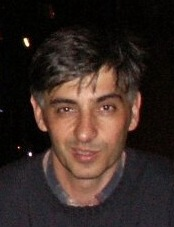
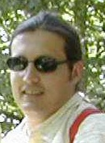
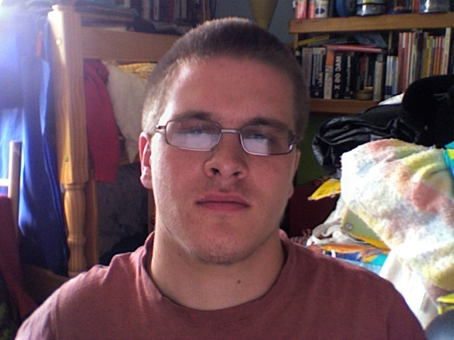
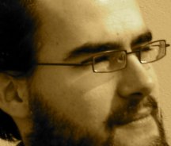

Current Developers on the Mac OS X Port
This page contains a photo and description of everyone who helps out with the Mac Port of OpenOffice. You can also take a look at our Frappr page.
Eric Bachard
Eric Bachard is a French Professor at the University of Technology of Belfort Montbeliard, France. He is the co-lead of the Porting Project. He has been working on the Mac OS X port since summer 2003, and has contributed to the OpenOffice.oeg 2.0 port Mac OS X, and Mac Intel port.
Éric Bischoff
 Éric is 42, French and living in Strasbourg. He is the co-founder of the Bureau Cornavin, a technical translation and technical writing company. His contributions to OOo so far are the KDE address book connector and the KDE settings backend.
Pavel Janik
Pavel Janík (29) is software and security consultant and architect living in small city Rudná, close to Prague, CZ. He specializes on large enterprises and government. He is working on the build related stuff of both Mac OS X platforms and sometimes jumps into something else like native menus, native file and folder picker etc.
Shaun McDonald
 Shaun is a 4th year Computer Science Student at Heriot-Watt University, Edinburgh. He is 19 years old and living in Edinburgh, Scotland. He has been helping with the development of the OOO Mac Porting Website. He has also helped with some testing, and bug fixes.
Alexis Pigeon
 Alexis Pigeon was born in 1980. He is French but living in Barcelona, Spain. He graduated in 2003 as a CS engineer, and since 2005 has been working for a spanish company in their IT department.
Tino Rachui
Tino Rachui lives in Ahrensburg, Germany. He has over 5 years of OpenOffice.org development experience including Support and extension of the System Abstraction Layer (SAL); Window Sytem integration (clipboard, drag & Drop, File Picker); OpenOffice.org Writer Core and Word filter development. He has been part of the Mac OS X porting team since July 2005. He is responsible for porting VCL, particular window and message handling.